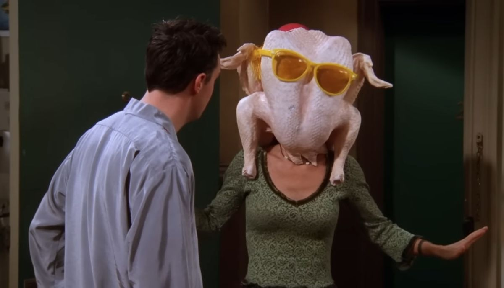
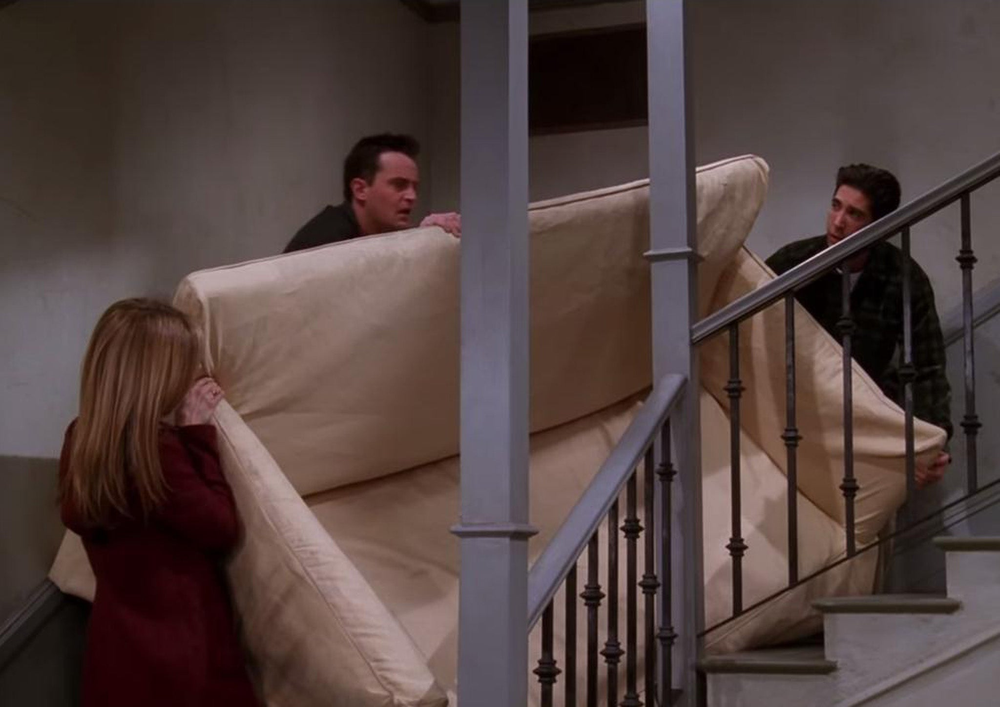

Friends is "one of those rare shows that marked a change in American culture."

-
Friends is an American television sitcom created by David Crane and Marta Kauffman, which aired on NBC from September 22, 1994, to May 6, 2004, lasting ten seasons. With an ensemble cast starring Jennifer Aniston, Courteney Cox, Lisa Kudrow, Matt LeBlanc, Matthew Perry, and David Schwimmer, the show revolves around six friends in their 20s and early 30s who live in Manhattan, New York City.
This average group of buddies goes through massive mayhem, family trouble, past and future romances, fights, laughs, tears and surprises as they learn what it really means to be a friend.
Friends developed an alternative family lifestyle by representing young people who live unconventional domestic lives. It presented the idea that "all you need are good friends" and that you can construct families through choice. . It portrayed a new way of living life and developing relationships which were not normally seen in conventional society.
